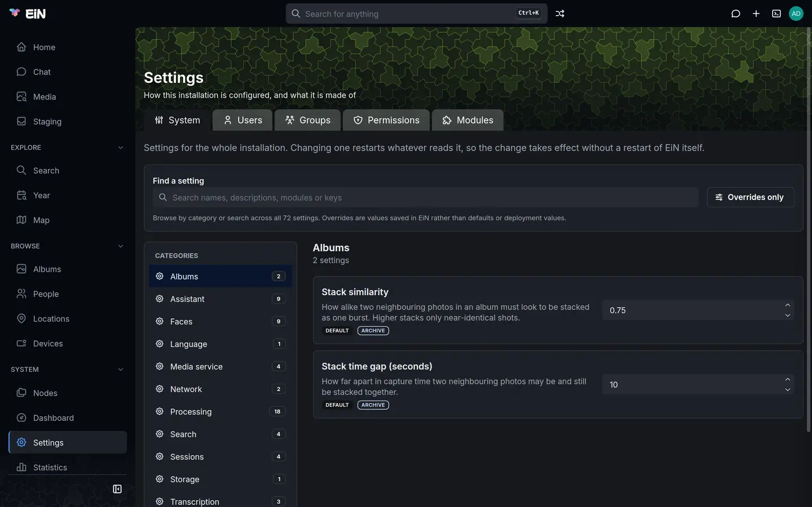

This page is for the administrator who runs EiN: where its settings live, how to change them on the Settings page, in the terminal or in the installation's .env, which value wins when several are set, and what a change restarts. Every setting itself, with its default, is listed on Settings.
Two kinds of settings
EiN has a single table of settings. Each one is an environment variable, such as CFG_TRASH_RETENTION_DAYS, with a plain name, a description, a kind of value and a default. Core declares some, and each module declares its own when it is installed, so the table grows and shrinks with the modules.
Each setting belongs to one of two scopes:
| Scope | Who changes it | Where | Named |
|---|---|---|---|
| System | An administrator, for everyone | Settings → System, or config set |
CFG_… |
| Personal | Each person, for themselves | Profile → Preferences, or config set |
CFG_USER_…, and HISTSIZE |
This page is about the system settings. Personal ones, such as Seconds per slide or Shell history length, are described in Your profile, favourites and trash.
Apart from the settings, the installation has its own environment in .env, in the folder EiN was installed in (~/ein with the installer). It holds what is fixed before EiN starts: where your files are, which ports the machine publishes, the database password. It can also give a setting its starting value. Set a value in the deployment explains how the two meet.
Change a setting on the Settings page
- Sign in as an administrator. Accounts and groups explains who that is.
- Choose Settings in the sidebar, under System. The page opens on the System tab.
- Pick a category in the Categories list on the left, or type in Find a setting to search names, descriptions, modules and keys across every category.
- Change the value in the setting's field. Save change and Cancel appear under it.
- Choose Save change. A line under the setting says what was restarted, for example "Restarted trash-purger.", or why nothing could be.


Each setting is saved on its own; there is no button that saves the page. The other tabs of Settings hold accounts, groups and modules: Accounts and groups covers Users, Groups and Permissions, and Modules covers Modules. The Permissions tab shows some of the same settings as System, such as the default sharing, and a change made on either shows on both.
The control depends on the kind of value: a switch shows On or Off, a choice is a list, a number has arrows, a person or a group is picked by name, and a permission mode is a choice of None, View or Edit for the owner, the group and everyone else. On a narrow screen the categories are a Category list above the settings instead.
Read where a value comes from
Under each setting's description, a badge says where the value in force comes from. A second badge names the module the setting belongs to, and settings that restart a service say which, as in "Restarts trash-purger".
| Badge | What it means |
|---|---|
| Default | Nobody has set it: the setting's own default is in force. |
| From deployment | The installation's environment sets it, usually .env. |
| From module, such as From archive | An installed module chose the value, such as the Archive naming its search parser. |
| Set here | An administrator saved it on this page or with config set. |
| Not set | A key to another service that nobody has given. |
Default, From deployment and From module can all be overridden: save a value and the badge becomes Set here. A setting that is set here shows Restore inherited value instead of Save change. Choose it to remove your value, and the setting falls back to what it would be without it: the module's choice, the deployment's value or the default, in that order.
Overrides only limits the page to the settings set here, with their number on the button. It is the quickest way to see what has been changed on this installation. When nothing matches a search, Clear filters empties the search and turns Overrides only off.
Some settings mean something when they are empty. For those, the description ends with what an empty value does, such as "Currently: the person who creates it.", and an empty text field says what it means, such as "Empty means no model".
Give a key to another service
A few settings are keys that EiN sends to another service: the media service's key, a hosted language model's key, and the access tokens for private module sources. Their names end in _KEY, and they are kept apart from every other setting:
- Nobody can read a key back, administrators included. The field is empty, with "Not set" or "Set — type a new one to replace it" in it, and the badge says whether the key comes from the deployment or was set here.
- To replace a key, type the new one and choose Save change. The field empties again once it is saved.
- A key is in no shell's environment, and EiN sends it only to the address set for its service. If a shell gives that address another value for one command, the request goes without the key.
What a change restarts
A setting that a service reads when it starts restarts that service when you save it, so the change takes effect without restarting EiN. The setting's card lists the services before you save, and the line under it confirms what was restarted afterwards. Work already running is not lost: it is picked up again when the service is back.
- Only services that are running are restarted. A service you stopped stays stopped, and reads the new value when you start it. Services and logs shows how.
- If a restart fails, the value is still saved, and a red message says "Could not restart" with the service's name and the reason. The service keeps running on the old value until it starts again.
- The ports, HTTP port and SSH port, restart nothing: restarting the web server from a web page would drop the connection you are using. They take effect the next time EiN starts, and the page says so.
- Worker backlog rotation (ms) is read by each pipeline worker as it starts, so the services that run one must be restarted by hand.
- Settings that are policy, such as the default sharing or Visitors may browse, are read each time they are applied, so they take effect at once and restart nothing.
A terminal that was already open when a setting changed keeps the value it started with in its environment. Open a new terminal tab, or run source /etc/bashrc, to see the new one with echo.
Change settings from the terminal
The config command does everything the Settings page does. Everyone signed in can list and read settings, and change their own; only an administrator can change a system setting.
# in EiN's terminal
config list # every setting, with where its value comes from
config list --scope system # the system settings only; --scope user for your own
config get CFG_TRASH_RETENTION_DAYS # the value in force
config set CFG_TRASH_RETENTION_DAYS 14
config unset CFG_TRASH_RETENTION_DAYSconfig list prints a setting per line: its name, a tab, its value, and in brackets where the value comes from. A default has no mark. A key shows (set) in place of its value, or nothing when it is not set:
CFG_COMMAND_FINDER assistant-commands (module assistant)
CFG_LANGUAGE_MODEL llm-chat (module assistant)
CFG_SEARCH_PARSER archive-parse (module archive)
CFG_TEXT_EMBEDDER ems-text-embed (module ems)
CFG_SESSION_REAP_INTERVAL 3600
CFG_HTTP_PORT 8080 (environment)
CFG_EMS_KEY (set) (environment)
CFG_TRASH_RETENTION_DAYS 14 (system)The marks match the badges on the Settings page: (system) is Set here, (environment) is From deployment, (module archive) is From archive, and (user) is a person's own value.
config set answers with the new value and what it restarted, and config unset with the value it falls back to and where that comes from:
$ config set CFG_TRASH_RETENTION_DAYS 14
CFG_TRASH_RETENTION_DAYS = 14
Restarted: trash-purger
$ config unset CFG_TRASH_RETENTION_DAYS
CFG_TRASH_RETENTION_DAYS reset to 30 (default)
Restarted: trash-purgerFor a port, the answer ends with the note that it takes effect the next time the server starts. For a key, config set answers only CFG_MODULE_SOURCES_KEY set, without the value. The command line you typed is kept in your shell history like any other; start it with a space to leave it out.
A value of the wrong kind is refused before anything is written:
| Kind | What config set accepts |
Refused, for example |
|---|---|---|
| number | digits, with an optional minus and decimals | config set: CFG_CPU_SLOTS: expected a number, got 'four' |
| on or off | true or false |
expected 'true' or 'false', got 'yes' |
| choice | one of the setting's choices | expected one of en, sv, got 'english' |
| permission mode | an octal mode such as 0750 |
expected an octal mode such as 0750, got 'rwxr-x---' |
| person or group | a name of letters, digits, ., _ and - |
'Anna Andersson' is not a valid user name |
| text or key | anything |
An empty value is refused too, with value must not be empty, except for the settings where empty means something. To return a setting to its inherited value, use config unset, not an empty config set.
Other refusals:
config set: unknown setting 'CFG_TRASH_DAYS': no installed part of EiN declares that name.config listshows the names there are; a module's settings exist only while the module is installed.config set: 'CFG_CPU_SLOTS' is a system setting and needs administrator rights: you are signed in as someone else. Accounts and groups explains how a member of thesudogroup becomes the administrator in a terminal withadmin.
A value with spaces, such as two module sources, is best quoted: config set CFG_MODULE_SOURCES 'https://github.com/einhq https://forge.example:3000/family'. With JSON_OUTPUT=1 in front, config list, config get, config set and config unset answer in JSON, with the setting's label, description, value and source. Core commands has the full entries.
Set a value in the deployment
.env is EiN's environment. Every CFG_… line in it reaches EiN when its container starts, and appears on the Settings page as From deployment. Use it for a value that belongs with the installation rather than with the running system, such as a hosted language model's address and key.
On the machine EiN runs on, open
.envin the folder EiN was installed in.Add or change the line:
# ~/ein/.env, on the machine EiN runs on CFG_TRASH_RETENTION_DAYS=14Apply it. This makes EiN's container again with the new environment:
# on the machine EiN runs on, in ~/ein podman compose up -d # or: docker compose up -dReload the Settings page. The setting shows the value with From deployment.
Running ./setup.sh applies .env too, but it also fetches and builds the newest sources: it is an update. Updating explains it.
A value in .env does not always win:
- A value set here wins over it. If the setting shows Set here, the line in
.envhas no visible effect. Choose Restore inherited value, or runconfig unset, to let it through. - A module's choice wins over it. The Archive, the assistant and the media service each name a command for one of the Search settings, such as
CFG_SEARCH_PARSER. To use another one, set it on the Settings page. - Some settings are fixed by the installation's
compose.yaml, which wins over.env:CFG_HTTP_PORT,CFG_SSH_PORT,CFG_EMS_URLandCFG_EMS_KEY. A line for them in.envchanges nothing. The published ports areEIN_HTTP_PORTandEIN_SSH_PORTinstead, and the media service's key isEMS_KEY, which goes to both sides.CFG_LLM_URLis read from.envand defaults to the language model the installer adds. - An empty line sets nothing.
CFG_LANGUAGE_MODEL=in.envis the same as leaving the line out.
The rest of .env is not settings but the installation's own variables: EIN_DATA, EIN_BIND, EIN_HTTP_PORT, EIN_SSH_PORT, EIN_MODULES, EIN_EMS, EIN_LLM, EIN_GPU, TZ and the passwords. Installing in detail explains each, and Environment variables lists every variable EiN reads besides its settings. A media service setting is an EMS_… line in the same file; The media service describes them.
How the layers combine
A setting can be given a value in up to four places. The narrowest wins:
| Order | Layer | File in EiN's tree | Badge |
|---|---|---|---|
| 1, wins | A person's own value, for personal settings | ~/.config |
Your setting |
| 2 | The administrator's value | /etc/config |
Set here |
| 3 | A module's choice | /etc/config.d/<module> |
From module |
| 4 | The deployment's environment | /etc/environment |
From deployment |
| 5 | The setting's default | none | Default |
A personal setting comes from ~/.config, the deployment or its default: neither a module nor /etc/config sets it. A system setting is never read from anyone's ~/.config.
Every shell in EiN, the services' shells included, sources these files at its start, /etc/environment first and ~/.config last, so each is exported over the one before. That is why every setting is an ordinary environment variable in the terminal:
# in EiN's terminal
echo $CFG_TRASH_RETENTION_DAYS
cat /etc/configThe files are ordinary shell files in EiN's tree, kept in the database, so they survive a restart. Each line is an assignment such as export CFG_TRASH_RETENTION_DAYS='14':
/etc/environmentis written again at every start, from theCFG_…variables EiN's container was started with. A value the deployment stops passing is gone from it. It never holds a key./etc/config.d/<module>is a module'setc/config, linked there when the module is set up and gone when it is removed./etc/configis what Save change andconfig setwrite for a system setting. Everyone can read it./etc/keysholds the keys saved here. Only the administrator can read it, and no shell sources it. A key from the deployment stays in EiN's own process and is never written to a file.
Configuration files lists these and EiN's other files.
Edit the settings file by hand
An administrator can open /etc/config in the editor, edit /etc/config, and add, change or remove export lines. Two things differ from the Settings page:
- Nothing checks the values. A number written as
fourreaches the service that reads it as it is. - Nothing is restarted. Policy settings apply at once; a setting a service reads at its start applies when that service restarts, from Services and logs or the next time EiN starts.
A line for a name no part of EiN declares is exported into every shell but shows nowhere. Prefer the Settings page or config set for anything listed there.
When a change does not take effect
- The value in
.envdoes not show. The setting is Set here or chosen by a module, both of which win; or it is one of the valuescompose.yamlfixes; or EiN's container was not made again. See Set a value in the deployment. - The page says the value is saved, but the service behaves as before. Look for a red "Could not restart" message under the setting, or check the service on Services and logs. A stopped service reads the value when it starts.
- The terminal shows the old value. The terminal was open before the change. Open a new tab.
- A port change did nothing. Ports take effect when EiN starts again, and with the installer's setup they should be changed in
.env, not here. See Ports, HTTPS and remote access. - A module's settings are missing. They exist only while the module is installed and working; check it on Settings → Modules, as Modules describes.
- Something else is wrong. Troubleshooting goes through the common problems.
Related pages
- Settings: every setting, with its default, kind and what it restarts.
- Environment variables: the variables EiN reads that are not settings.
- Your profile, favourites and trash: personal preferences.
- Accounts and groups: the Users, Groups and Permissions tabs, and the default sharing.
- Modules: the Modules tab, module sources and their tokens.
- Processing and pipelines and Performance and sizing: what the Processing settings do in practice.
- The media service and The language model: their addresses and keys.